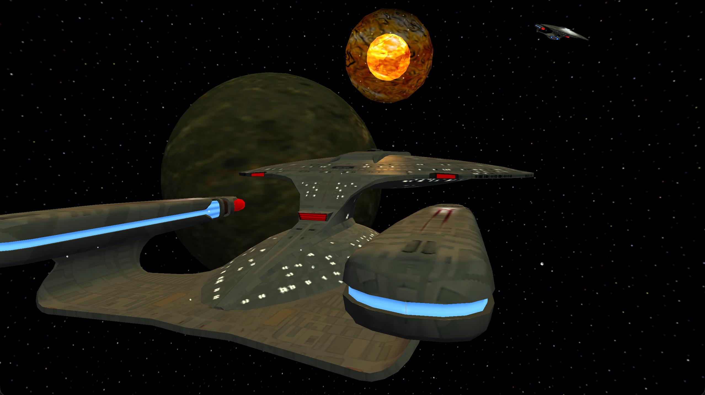

Experimental Reconstruction Project · 2026
Star Trek
Bridge Commander
Dauntless
An open, cross-platform rebuild of the engine behind Star Trek: Bridge Commander (2002),
attempted with heavy use of AI pair-programming. To our knowledge,
the first serious attempt at rebuilding a legacy game engine of this scale with
a large-language model as a primary collaborator.
— May the wind be at our backs —
Phase 03 · Active
Claude-Assisted
C++ · CPython embedded
macOS · Linux · Windows
Fan Project
This is an experiment, and we don't know how it ends. The goal: take the original
Star Trek: Bridge Commander — a 2002 Windows-only game whose entire
gameplay logic lives in Python but whose engine is a compiled, closed-source C++
binary — and rebuild that engine from scratch so the original Python scripts
run again on modern macOS, Linux, and Windows.
What makes this experiment unusual is the method. Almost every line of code in this
project was written with Claude (Anthropic's LLM) as a pair-programmer.
That includes the NIF asset loader, the C++ renderer, the host loop that embeds
CPython, the physics integration, the shaders — the lot. As far as we're
aware, this is the first serious attempt to reconstruct a legacy game engine of
this size with a large-language model as the principal collaborator.
It might not work. It might stall at Phase 5 with the AI scripts running fine
but combat refusing to feel right. It might hit a wall at character animation.
It might surprise everyone and ship. The point of putting this page up is to make
the attempt visible — what's been built, what's next, what broke last week.
If you are reading this and thinking "that's not how you rebuild a game engine,"
you're probably right. Half the reason this project exists is to find out
which half is right. Progress will be honest.
The original game ships as a Windows binary — Appc.dll —
with every screen, every mission, every ship and weapon definition written in Python.
Roughly 1,200 Python files sit on disk in the SDK, fully readable, fully unchanged
since 2002. What's missing is anything to actually drive them.
The plan is to replace Appc.dll with an open C++ engine that:
Runs the Original Scripts
Embeds CPython 3 and drives BC's existing Python game loop. No forking the SDK, no rewriting missions — the goal is bit-for-bit script compatibility.
Renders Natively
An in-house C++ renderer parses BC's NIF asset blocks directly, with passes for opaque hull, shields, glow, and space-dust particles.
Crosses Platforms
macOS first, Linux next, Windows at 1.0. Single codebase, no Wine, no DirectX. The first time BC will be playable natively outside Windows.
Stays Open
Open-source engine, every commit public. The community that kept BC alive for two decades is the natural audience — mod support is on the roadmap.
Stardate 2026-05-12 · Engineering Log
Sovereign-class shields now hug the hull. The new shield
pass dispatches a skin-mesh built by inflating the loaded NIF along its
vertex normals, so hit-flashes ripple across the actual silhouette of the
ship rather than a fitted ellipsoid. Every loaded ship registers itself
with the shield pass on spawn; the hit shader is wired into the frame
between the opaque and dust passes.
On the UI side, the reusable Button and CollapsibleList
components landed, with theme registries mirroring the original
LoadInterface.py palette. The target-list panel reads live
from the scene instead of a hard-coded stub. The space-dust pass —
camera-anchored particles with motion smear — can be toggled with
F7.
Phase 03 (UI Framework) is in motion. Next up: aligning more of BC's
original interface screens with the new component library.

img/latest.png
Drop screenshot here
Sovereign · live target list · skin-shield ready · 2026-05-12
Each phase is a self-contained milestone — something visible and shippable.
Status is honest: Complete means it works end-to-end today,
In Progress means we're actively pushing on it,
and Standby means it hasn't started.
01
Headless Logic Engine
Original BC Python scripts running against a stubbed Appc, with PyBullet driving physics. Missions load, timers fire, AI ticks — no renderer needed.
Complete
02
Native Renderer & Flight
C++ host loop, NIF asset loading, ship controls, rough star-system loading. The engine flies under its own power.
Complete
03
UI Framework
Reusable UI components — buttons, lists, panels — aligned with the original LoadInterface scripts so BC's screens render on the new stack.
In Progress
04
AI Scripts Online
The original tactical and strategic AI scripts run unmodified on the new engine. NPCs make their own decisions.
Standby
05
Targeting & Combat
Weapons, lock-on, shields, sub-system damage — replicated to original BC behaviour and balance.
Standby
06
Audio Engine
OpenAL pipeline online: weapon SFX, engine hum, ambient bridge, music cues driven by the original sound scripts.
Standby
07
Bridge Interior
Render the player's bridge with crew stations and viewscreen. Stand on the deck of your own ship.
Standby
08
Save & Load
Restore BC's pickle-based save path so mid-mission state round-trips across the new engine end to end.
Standby
09
Quick Battle
First end-to-end playable game mode — pick a ship, pick a scenario, fight. The first time the project feels like a game.
Standby
10
UI Polish Pass
HiDPI, theming, modernisation of the BC UI surface. Looks good on a 5K display.
Standby
11
Character Animation
Animated bridge crew restored — idles, turns, console interactions.
Standby
12
Voice & Cinematics
In-mission voice-over playback, lip-sync hooks, and the scripted cinematic camera system the campaign relies on.
Standby
13
Single-Player Campaign
Full mission compatibility — the original campaign playable from start to finish on the new engine.
Standby
14
1.0 Release
Packaged builds for macOS, Linux, and Windows. Installer, signing, public release notes. The ship-it milestone.
Standby
15
Mod & SDK Compatibility
Load community mods that target the original BC script API; document any divergences. Optional content-tools bundle for asset conversion.
Standby
Phases past 05 · Targeting & Combat are educated guesses about
scope and order. Reality will reshuffle them. If a phase turns out to be three phases,
the roadmap will be honest about that when it happens.
Engine Architecture
Host ProcessC++ executable embedding CPython 3 — drives the BC Python game loop natively, no shim DLL.
RendererIn-house C++ renderer parsing BC's NIF asset blocks. Passes: opaque hull, sovereign shields, glow (via AddLOD), space dust.
PhysicsPyBullet during the Phase 1 headless work; transitioning to native Bullet through the C++ host as Phase 2 settles.
AudioOpenAL — stands up in Phase 06 alongside the audio script bindings.
UIRmlUi for HUD overlays; reusable component library mirrors the original BC LoadInterface scripts.
Asset PipelineBC NIF files (NetImmerse / Gamebryo blocks). Right-handed coordinate space, W-first quaternions, link-ID streaming.
PlatformsmacOS-first development. Linux follows. Windows joins for 1.0. Single codebase, no DirectX dependency.
Source MaterialBC SDK v1.1 — 1,228 Python files, fully readable, unchanged since 2002.
How Claude Fits
The collaboration model in plain English: a human (Mark) directs, reviews, and
makes architecture calls. Claude writes the bulk of the C++, shaders, build
scripts, and tooling. Each non-trivial change goes through a brainstorm → spec →
plan → implementation loop, with the spec committed to docs/superpowers/specs/
before code is written. Every commit is human-reviewed before merge.
The repository is structured to make this auditable: design specs are first-class
artefacts, surveys of the original game's behaviour live alongside the code, and
the project's CLAUDE.md is itself documentation for both human and AI
readers.
Captain
Mark Ward — direction, architecture review, in-game testing, all the "is this actually right" calls. Holds the keys to the repository.
Engineering
Claude (Anthropic) — bulk implementation: C++ engine, NIF loader, renderer passes, shaders, build system, test scaffolding. Pair-programmer in residence.
Original Crew
Totally Games & Activision (2002) — wrote every script this project loads. Their work is the spec; this project is the new engine running underneath it.
Our challenge to the game industry and ourselves was to reinvent the venerable
genre of space combat games while at the same time creating a game that leveraged
the best known science fiction universe.
— Lawrence Holland, Creative Director · Totally Games · 2002
Twenty-four years later, the goal is more modest: keep the wind at their backs.
This is a non-commercial fan project. It is not affiliated with,
endorsed by, or sponsored by Activision, Totally Games, Paramount, or CBS.
Star Trek, Star Trek: Bridge Commander, and all related marks are
trademarks of their respective owners.
No original game assets are distributed by this project. The engine
is open source; running it requires a legitimately-owned copy of the original
Star Trek: Bridge Commander (2002) for the game's Python scripts, textures,
models, and audio.
Code in this repository is original work; AI-assisted authorship is disclosed
and human-reviewed before merge. This page itself is part of the experiment.